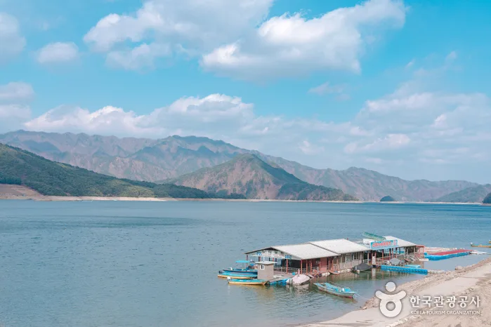
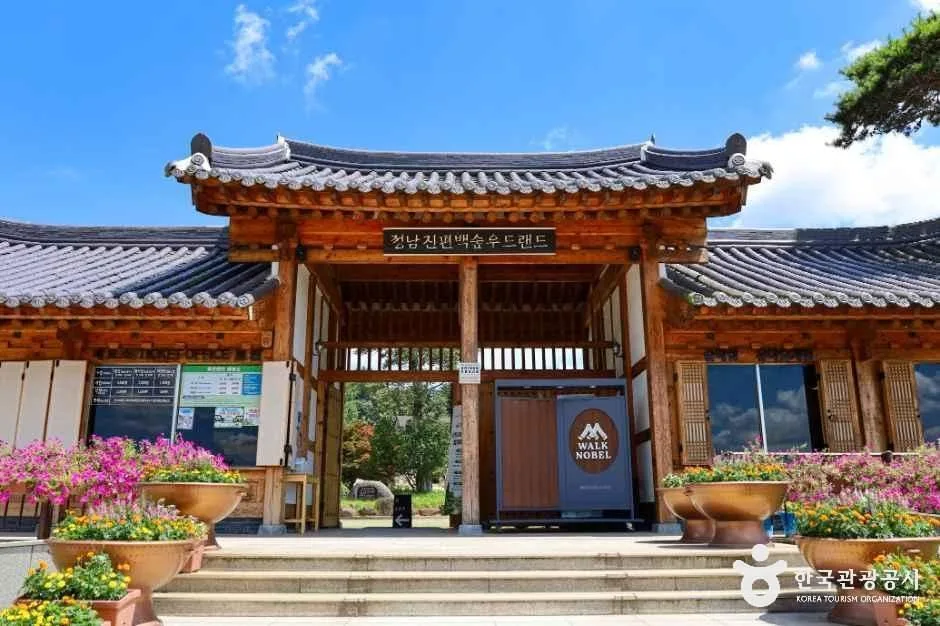
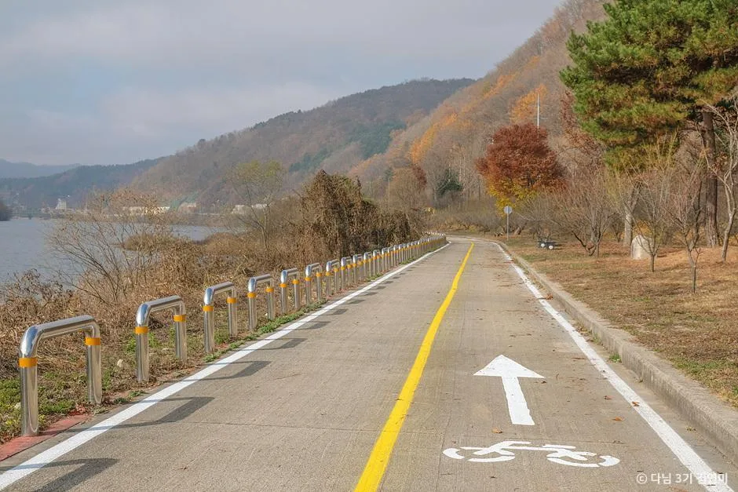
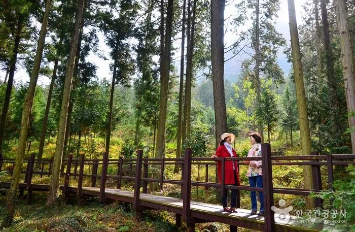

▲ 경남 산청 남사예담촌. 산청군은 이번 하반기 반값여행 추가 지역 9곳에 포함됐다
"20만원 쓰면 14만원을 돌려준다"는 말은 과장이 아닙니다. 다만 조건이 붙습니다. 그 조건에 해당하지 않으면 같은 20만원을 써도 돌려받는 돈은 10만원입니다.
문화체육관광부와 한국관광공사가 운영하는 지역사랑 휴가지원사업, 이른바 대한민국 반값여행에 하반기 9개 지역이 추가됐습니다. 문체부는 8월 27일 신규 지역을 발표했고, 접수는 8월 말부터 지역별로 순차 개시됩니다.
1. 14만원이 나오는 계산
기본 환급률은 50%입니다. 숙박, 식사, 체험 등 여행지에서 쓴 돈의 절반을 돌려받습니다. 1인 기준 한도는 10만원이므로, 20만원을 쓰면 10만원이 나옵니다.
여기서 청년은 다릅니다. 청년기본법상 청년, 즉 19~34세에게는 환급률이 20%p 상향돼 70%가 적용됩니다. 한도도 14만원으로 올라갑니다. 20만원의 70%가 정확히 14만원이므로, 기사 제목의 계산은 청년 1인을 전제로 한 숫자입니다.

▲ 반값여행 지원 절차. 여행 계획 신청 → 여행 후 증빙 제출 → 50% 환급 순으로 진행된다 ⓒ 기획예산처
| 구분 | 환급률 | 1회 한도 |
|---|---|---|
| 일반 1인 | 50% | 10만원 |
| 청년 1인(19~34세) | 70% | 14만원 |
| 2인 이상 | 50% | 20만원 |
| 가족(5인까지) | 50% | 50만원 |
청년 연령은 신청 시점 기준입니다. 한국관광공사 안내에는 "사업공고일 또는 사업개시일 기준 19~34세"로 돼 있고, 지역 공고에서는 "사업신청일 기준 19세 이상~34세 이하"로 표기됩니다. 여행 당일이 아니라 신청하는 날을 기준으로 판단한다는 뜻입니다.
주의할 점은 지급 형태입니다. 환급금은 계좌로 들어오는 현금이 아니라 모바일 지역사랑상품권으로 지급됩니다. 지역에 따라 제로페이 앱(비플페이) 또는 chak 앱을 쓰고, 사용처도 해당 지역 가맹점으로 제한됩니다. 여행비를 아끼는 제도라기보다, 그 지역에서 한 번 더 쓰게 만드는 구조에 가깝습니다.
📍 한도는 지자체마다 다를 수 있다
한국관광공사는 위 한도를 안내하면서도 "다만 지자체마다 상이할 수 있으므로 반드시 신청 전 지자체 홈페이지를 통해 확인"하라는 단서를 함께 붙이고 있습니다. 실제로 고성군은 청년 지원을 580명 선착순으로 따로 제한하고 있습니다. 표의 숫자는 상한선으로 보고, 최종 확인은 가려는 지역 공고에서 해야 합니다.
2. 9곳은 동시에 열리지 않는다
가장 먼저 확인해야 할 것은 개시일입니다. 9개 지역이 한꺼번에 열리는 것이 아니라 8월 28일부터 9월 15일까지 순차적으로 접수를 시작합니다. 8월 30일 현재 실제로 접수 중인 곳은 경남 고성 한 곳이고, 나머지 8곳은 "준비 중" 상태입니다.

▲ 경남 고성 상족암군립공원 일대. 9곳 중 가장 먼저 접수를 시작한 지역이다 ⓒ 대한민국 구석구석(한국관광공사)
| 지역 | 접수 개시 | 1차 여행기간 | 지역화폐 |
|---|---|---|---|
| 경남 고성 | 8/28(금) 9시 | 9.19~10.11 | 제로페이 |
| 경남 산청 | 8/31(월) 11시 | 9.3~9.30 | 제로페이 |
| 경북 영천 | 8/31(월) 14시 | 9.3~11.30 | chak |
| 강원 화천 | 9/1(화) 10시 | 9.4~10.31 | 제로페이 |
| 경남 함양 | 9/3(목) 10시 | 9.5~9.30 | 제로페이 |
| 충남 서천 | 9/7(화) | 9.14~9.30 | chak |
| 전남 장흥 | 9/7(월) | 9.19~10.11 | chak |
| 경북 안동 | 9/14(월) | 9.17~11.30 | chak |
| 충남 태안 | 9/15(화) 10시 | 9.16~10.11 | chak |
접수는 차수제로 돌아갑니다. 지역마다 1차·2차 여행기간이 따로 있고, 각 차수는 선착순입니다. 예를 들어 고성 1차는 8월 28일 9시부터 9월 14일 18시까지 접수하고, 그 안에 정원이 차면 조기 마감됩니다. 여행기간도 차수마다 고정돼 있어 아무 날짜나 갈 수 있는 것이 아닙니다.

▲ 강원 화천 파로호. 1944년 화천댐 준공으로 생긴 인공 호수다 ⓒ 대한민국 구석구석(한국관광공사)
사업 종료일은 전 지역 공통으로 11월 30일입니다. 다만 예산이 먼저 소진되면 그 전에 닫힙니다. 가을 성수기와 겹치는 9~10월 차수가 가장 경쟁이 심할 것으로 보입니다.
3. 신청은 반드시 출발 전에
이 제도에서 가장 많이 놓치는 지점입니다. 여행을 다녀온 뒤 영수증을 모아 신청하는 방식이 아닙니다. 한국관광공사는 안내 페이지에 "사전에 신청하지 않을 경우 지원 불가"라고 명시하고 있습니다.
절차는 세 단계입니다. ① 신청자가 해당 지역 여행 계획을 제출하고 승인을 받습니다(기획예산처 안내 기준 18세 이상). ② 실제로 여행을 다녀온 뒤 여행경비 증빙자료를 제출합니다. ③ 지자체 확인을 거쳐 모바일 지역사랑상품권으로 환급받습니다.

▲ 대한민국 반값여행 안내. 인구감소지역 여행 활성화를 목적으로 설계된 사업이다 ⓒ 문화체육관광부
마감 시점이 여행 출발보다 훨씬 앞선 지역도 있습니다. 태안은 "차수별 여행 출발 3일 전까지 사전 신청 필수"라고 별도로 못 박고 있습니다. 접수 기간이 열려 있어도 출발이 임박했다면 신청이 안 될 수 있다는 뜻입니다.
📍 신청은 어디서 하나
전국 통합 창구가 없습니다. 접수는 지역별 지자체 누리집에서 각각 진행되고, 지역마다 신청 페이지와 문의 번호가 다릅니다. 참여 지역과 접수 현황(준비 중 / 신청접수중 / 마감)은 대한민국 구석구석 반값여행 페이지에서 한눈에 확인할 수 있습니다.
대한민국 반값여행 페이지에서 지역별 접수 현황 확인
4. 9곳 전부에 붙는 인증 조건
돈을 쓴 것만으로는 부족합니다. 하반기 9개 지역은 예외 없이 지정 관광지 방문 인증을 요구합니다. 요구 수준은 지역마다 다릅니다.

▲ 충남 서천 국립생태원. 서천은 유료 관광지 1곳과 무료 관광지 1곳을 모두 방문해야 한다 ⓒ 대한민국 구석구석(한국관광공사)
| 지역 | 방문 인증 요건 | 최소 결제액 |
|---|---|---|
| 고성 | 지정 관광지 2개소 이상 + 인증사진 2매 이상 | 10만원 |
| 산청 | 지정 관광지 2개소 + 제로페이 가맹점 2개소 소비 | 10만원 |
| 함양 | 지정관광지·디지털관광주민증 가맹점 2개소 + 관광소비 2개소 | 1인당 10만원 |
| 영천 | 관광지 2개소 이상 방문 인증 | 10만원 |
| 화천 | 주요 관광지 2개소 이상 + 인증사진 | 7만원 |
| 태안 | 태안사랑상품권 가맹점 2개소 이상 소비 | 10만원 |
| 서천 | 유료 관광지 1개소 + 무료 관광지 1개소 | — |
| 장흥 | 관광지 1개소(사진) + 디지털관광주민증 가맹점 소비 | — |
| 안동 | 관광지 1개소(사진) 방문 | — |

▲ 전남 장흥 정남진 편백숲 우드랜드. 장흥은 관광지 사진 1장과 가맹점 소비를 함께 요구한다 ⓒ 대한민국 구석구석(한국관광공사)
결제 수단에도 제한이 걸립니다. 대부분 지역이 대표자 명의 카드만 인정하고, 현금영수증은 원칙적으로 제외입니다. 다만 숙박업소에 한해 신용카드·현금영수증을 예외로 인정하는 지역이 많습니다. 화천은 여기서 한 단계 더 엄격해 "대표자 명의의 신용(체크)카드만 인정"하고, 숙박만 대표자 명의 휴대번호로 발급한 현금영수증을 예외로 둡니다.

▲ 경남 함양의 고택. 함양은 방문 인증과 관광소비를 각각 2개소씩 요구한다 ⓒ 대한민국 구석구석(한국관광공사)
여행유형은 나중에 바꿀 수 없습니다. 가족·개인·단체·청년 중 하나를 골라 신청하는데, 중복 신청이 불가하고 승인 후 유형 변경도 안 됩니다. 청년 단독으로 신청할지 가족으로 묶을지는 신청 전에 유불리를 계산해두는 편이 낫습니다.
정산에서 아예 빠지는 업종도 있습니다. 상반기 참여 지역인 횡성 공고를 보면 연 매출 30억원 초과 업소, 금은방, 유흥시설, 주유소, 카센터 등이 실적 인정에서 제외됐습니다. 주유비를 여행경비로 넣으려는 계산은 통하지 않는다는 뜻입니다.
5. 그 밖에 놓치기 쉬운 조건
거주지와 인접 지역은 신청할 수 없습니다. 반값여행 페이지에는 "거주지(주민등록상 주소지) 인접 지역은 신청 제한"이라고 명시돼 있습니다. 이 사업이 외지 관광객 유입을 목적으로 하기 때문입니다. 인접 지역 판정 기준은 지역마다 공고에 따로 나옵니다.

▲ 충남 태안 해안. 태안은 여행 출발 3일 전까지 사전 신청을 마쳐야 한다 ⓒ 대한민국 구석구석(한국관광공사)
증빙 서류가 생각보다 많습니다. 숙박을 이용했다면 결제 영수증만으로 부족하고 숙박이용확인서나 예약완료 캡처를 함께 요구하는 지역이 있습니다. 방문 인증사진도 지역에 따라 2매 이상을 요구합니다. 여행 중에 챙기지 않으면 나중에 만들 수 없는 자료들입니다.
| 항목 | 내용 |
|---|---|
| 신청 시점 | 출발 전 계획 제출 및 승인 — 사전 신청 없으면 지원 불가 |
| 거주지 조건 | 거주지(주민등록상 주소지) 인접 지역 신청 제한 |
| 방문 인증 | 9곳 전부 지정 관광지 방문 인증 필수 |
| 최소 결제액 | 화천 7만원 / 그 외 대체로 10만원 이상 |
| 결제 수단 | 대표자 명의 카드 원칙 — 숙박만 예외 인정 |
| 유형 변경 | 가족·개인·단체·청년 승인 후 변경 불가 |
6. 상반기 성적표
이 사업이 하반기로 이어진 근거는 상반기 실적입니다. 문화체육관광부가 상반기 16개 지역을 분석한 결과, 52억원의 환급 예산이 투입돼 최소 162억원의 지역 내 소비를 만들어낸 것으로 집계됐습니다. 환급액 대비 최소 3.1배입니다.

▲ 경북 영천 보현산 일대. 정상부 천문대까지 차로 접근할 수 있는 구간이 있다 ⓒ 대한민국 구석구석(한국관광공사)
더 주목할 숫자는 방문 구성입니다. 이용자의 56.3%가 해당 지역을 처음 방문한 것으로 나타났습니다. 원래 갈 사람에게 돈을 얹어준 것이 아니라, 가지 않았을 사람을 실제로 움직였다는 뜻입니다. 지원 지역을 9곳 늘린 근거가 여기에 있습니다.
3.1배가 나오는 구조도 단순합니다. 환급이 현금이 아니라 그 지역에서만 쓸 수 있는 상품권으로 나가기 때문에, 돌려받은 돈이 다시 같은 지역에서 소비됩니다. 여행자 입장에서는 "이미 받은 돈을 여기서 써야 한다"는 상황이 되고, 지역 입장에서는 한 번의 방문에서 두 번의 소비가 발생합니다.
7. 차로 간다면 어떻게 묶을까
9곳은 권역별로 인접해 있습니다. 경남 3곳(고성·산청·함양)과 경북 2곳(안동·영천), 충남 2곳(서천·태안)이 각각 묶입니다. 다만 환급은 지역별로 별도 신청이고 여행유형 중복 신청도 막혀 있어, 한 번의 여행에서 두 지역을 도는 것과 두 지역 각각에서 환급을 받는 것은 다른 문제입니다.

▲ 산청·함양 일대의 가을 산책로. 두 지역은 지리산 자락을 사이에 두고 붙어 있다 ⓒ 대한민국 구석구석(한국관광공사)
여행기간이 겹치는지도 봐야 합니다. 산청 1차는 9월 3~30일, 함양 1차는 9월 5~30일로 겹칩니다. 두 지역을 각각 신청해 같은 일정 안에서 이어 붙이는 구성이 이론적으로는 가능합니다. 반대로 고성(9.19~10.11)과 산청(9.3~9.30)은 겹치는 구간이 짧습니다.

▲ 화천 파로호 산소 100리길. 호수를 따라 도로와 자전거길이 나란히 이어진다 ⓒ 대한민국 구석구석(한국관광공사)
가을 시즌을 감안하면 권역별 성격이 갈립니다. 산청·함양은 지리산 자락이라 단풍 시기가 빠르고, 서천·태안은 서해안이라 낙조와 갯벌 쪽입니다. 안동·영천은 내륙 문화유산 중심이고, 고성은 해안 지형과 공룡 화석지가 묶입니다. 화천은 산간이라 접근 시간이 가장 길게 나오는 대신 최소 결제액이 7만원으로 가장 낮습니다.

▲ 경북 안동 하회마을. 9곳 중 인지도가 가장 높아 예산 소진이 빠를 가능성이 있다 ⓒ 대한민국 구석구석(한국관광공사)
안동은 이 목록에서 이질적입니다. 하회마을이라는 유네스코 세계유산을 가진, 이미 관광 수요가 있는 도시이기 때문입니다. 인증 요건이 "관광지 1개소 방문"으로 가장 느슨한 대신 접수 개시가 9월 14일로 늦고, 인지도가 높은 만큼 예산 소진이 빠를 수 있습니다.

▲ 전남 장흥 정남진 편백숲의 데크 산책로. 억불산 자락에 40년생 편백이 밀집해 있다 ⓒ 대한민국 구석구석(한국관광공사)
정리하면 이렇습니다. 환급률 70%는 청년에게만 적용되고, 신청은 출발 전에 해야 하며, 9곳 모두 관광지 방문 인증과 최소 결제액을 요구합니다. 돌려받는 돈은 그 지역에서만 쓸 수 있는 상품권입니다. 이 네 가지를 알고 계획을 짜면 실제로 여행비 부담이 절반 아래로 떨어집니다. 반대로 다녀온 뒤에 알게 되면 아무것도 받을 수 없습니다.